SpindleLab v3 · E12 · compuerta 1 · 16 de octubre de 2026
Santiago 14:05UTC-3
El laboratorio: lo que medimos de Koto y qué hacemos con tu brief
Koto manda y tu brief orienta.Aquí está lo medido, lo que se toma, lo que no y por qué, los tokens dibujados y lo que decides hoy para pasar a las dos direcciones.
1
Lo que pediste
Que SpindleLab se presente como un estudio de diseño y tecnología que también hace SEO técnico y visibilidad en IA, con la misma oferta y los mismos precios.
Astro, Tailwind y Motion, sobre lo que ya funciona: el chequeo, los formularios, la verificación y el despliegue en Cloudflare.
Casos solo con lo medido: problema, hipótesis, solución y lo que de verdad se midió. Donde no hay métrica, no se pone.
Koto manda y tu brief orienta: medimos koto.com y acceptandproceed.com, mantenemos la intención y reemplazamos lo que huela a plantilla, diciendo por qué.
Tus mensajes del 16-oct, textuales: e12/insumos-ramon-16oct.md. El detalle de este tablero, valor por valor: e12/lock-koto.md.
2
Koto y Accept & Proceed, medidos
Medidos en el navegador el 16 de octubre, a 1440 y a 390.Cada valor tiene su página y su selector en e12/medicion/koto/medicion.json y e12/medicion/accept-and-proceed/medicion.json.
Koto
Un lienzo casi negro donde la interfaz se retira.Gris, chica, una sola letra en tres cortes y sin negritas. El único color es el del trabajo, y lo único vivo en la interfaz es dato verdadero.
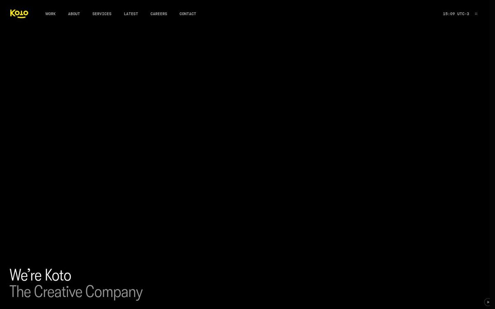
La portada: «We’re Koto» a 48 px, en una esquina. Lo grande es el showreel, que sale negro porque el video no corre en el navegador de medición. 1440.El índice: barra lateral de 320 px y un muro de dos columnas, sin bordes. 1440.
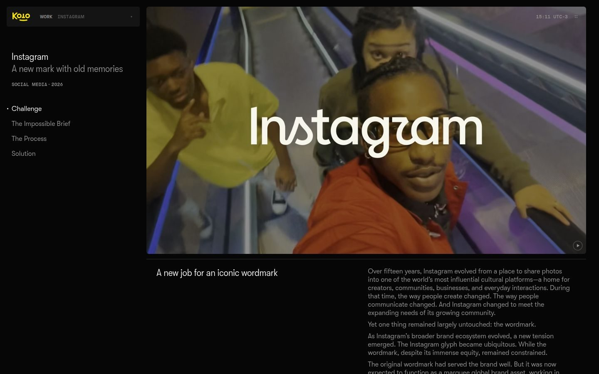
Un caso: ficha lateral pegajosa, índice de secciones con un punto en la activa, rótulo y titular de sección a la izquierda y cuerpo gris a la derecha. 1440.
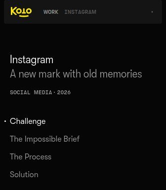
La ficha del caso: tipo y año en mono, verdaderos.
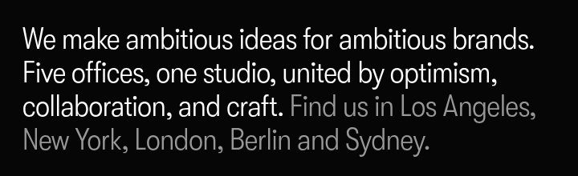
Dos tintas en una frase: lo nombrado en blanco, la continuación en gris.
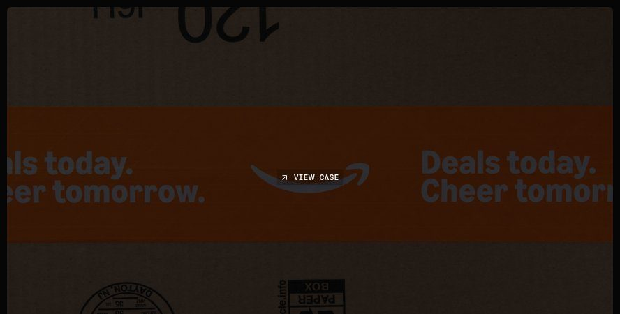
El cursor: etiqueta mono de 11 px, sin color, solo sobre el trabajo.
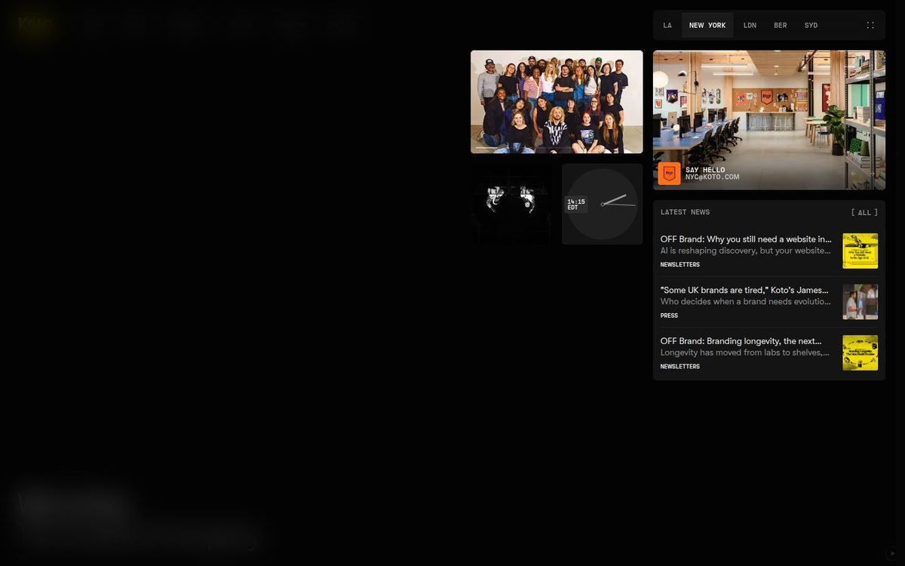
Telemetría verdadera: la hora de cada estudio y sus noticias; «[ ALL ]» es un enlace.
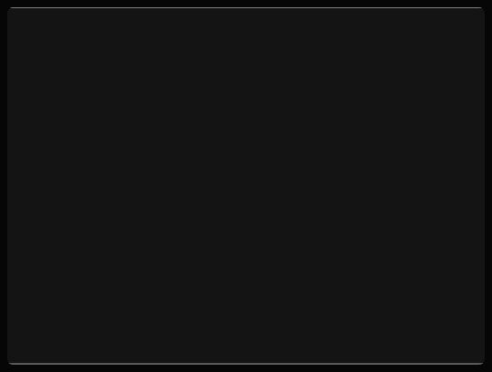
Pieza del índice en reposo. La imagen no había cargado: se ve el marco de la placa donde espera.
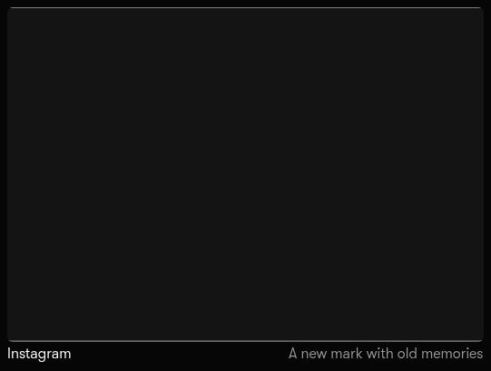
Al pasar el mouse: se acorta 24 px en 167 ms y aparece la bajada, en dos tintas.
A 390: una columna, nombre y bajada siempre a la vista, el conteo «(35)».
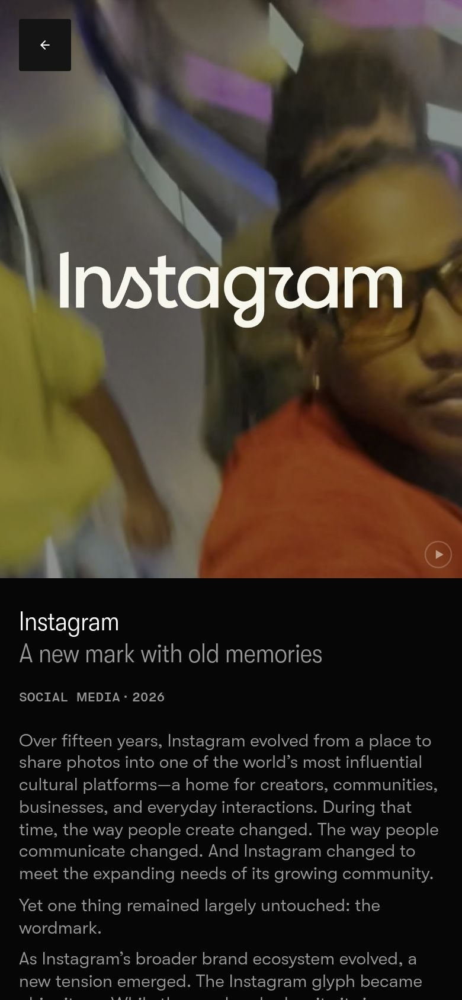
El caso a 390: la ficha arriba, el cuerpo debajo.
Letra
GT Kotoheim, de Grilli Type, hecha para Koto (licencia exclusiva). Tres cortes: condensado liviano 300 para titulares (48, 38 y 24 px a 1440), regular 350 para el cuerpo (16 px, línea de 1,25) y mono de 11 px en mayúsculas para rótulos. Ni una negrita en las cuatro páginas.
Color
Lienzo #060606 (85 a 96 % de lo que no es imagen), placa #141414, texto corrido #989898 (7,02:1) y lo nombrado en blanco (20,26:1). El amarillo está solo en el logo. Las imágenes cubren del 33 al 72 % de cada página: el color lo pone el trabajo.
Retícula
Márgenes de 16 px, 16 columnas con 8 px entre ellas, de borde a borde, sin ancho máximo. Cortes en 834 y 1194 px.
Índice
Barra lateral de 320 px y un muro de dos columnas con tres proporciones (4:5, 4:3, 5:3). Sin bordes ni cajas de datos.
Cursor
Una etiqueta mono de 11 px, «VIEW CASE», sin color, solo sobre el trabajo. Sigue al mouse sin retardo.
Hover
La pieza se acorta 24 px en 167 ms y aparece su bajada. Sin zoom, sin color.
Movimiento
GSAP, scroll nativo, tiempos en cuadros con curvas propias (la entrada: .5s cubic-bezier(0,0,0,1)). Nada rebota. Ignora el movimiento reducido.
Cómo escriben
Un rótulo de dos palabras y una continuación en gris de 6 a 13. Corchetes solo en un enlace: «[ VIEW ALL ]».
Casos
35 casos, ninguno con un porcentaje. Ficha lateral, secciones (Challenge, Strategy, Identity, Application, Outcome) y uno solo con un resultado medido.
Accept & Proceed
Un archivo de trabajo sobre papel claro.Una sola letra, chica; columnas vacías a propósito; la imagen es lo grande y la interfaz no tiene ningún acento.
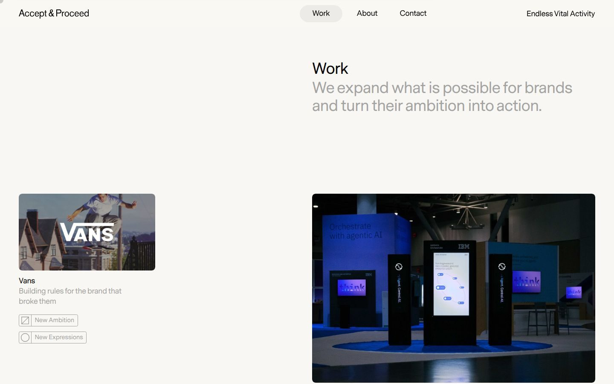
Work: el título en la columna 5, las cuatro primeras vacías. 1440.
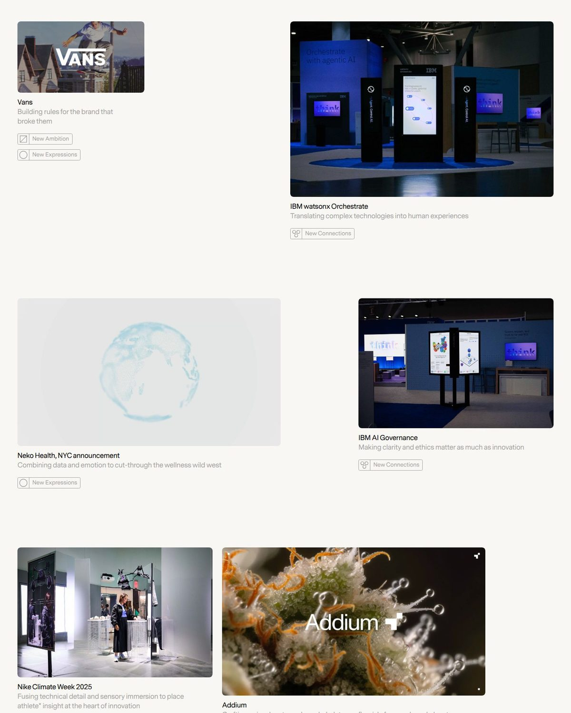
Pares con columnas vacías y 149 px entre filas. Sin bordes.
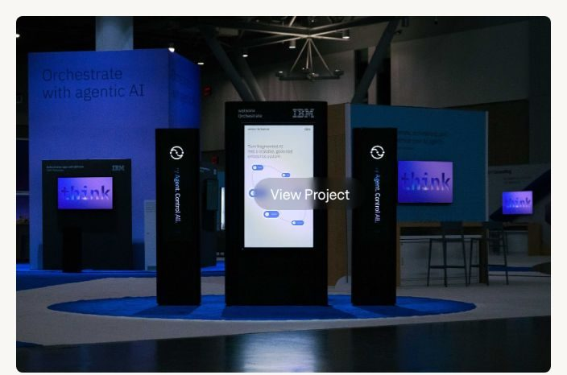
«View Project»: el cursor dice adónde lleva, sin color.
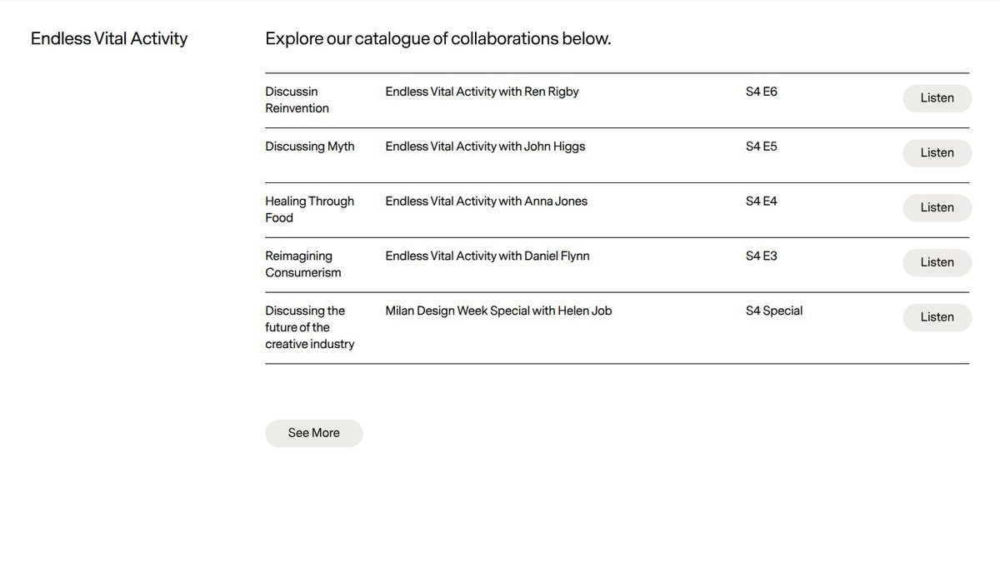
El único lugar con filetes de 1 px: una tabla.
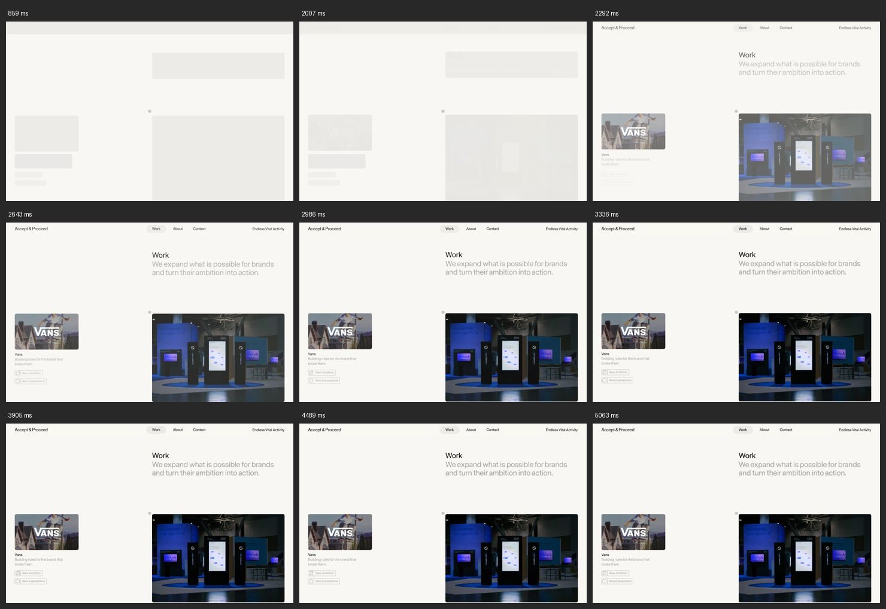
La carga: cada bloque espera en un marco gris con su radio real y el contenido entra después.
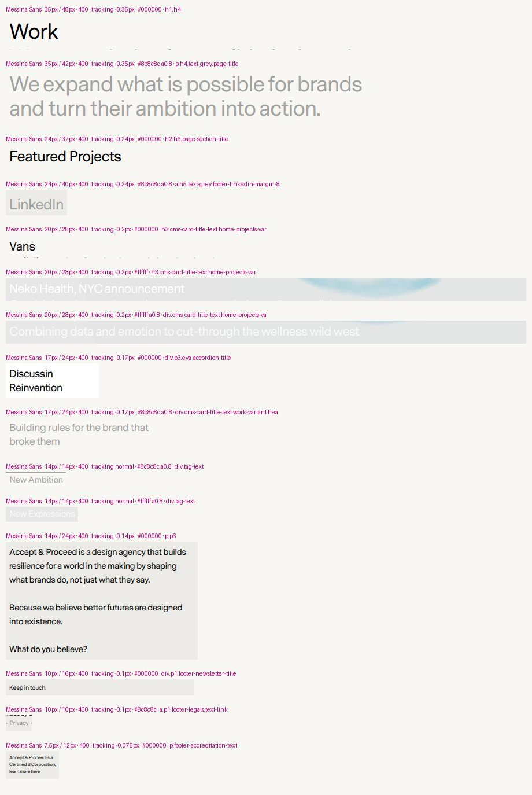
Una letra, un peso, de 35 a 7,5 px. Los rótulos en magenta son de la medición, no del sitio.
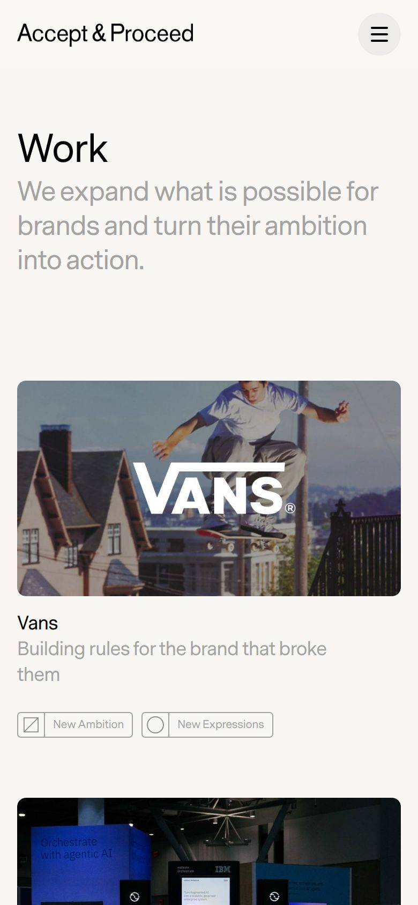
A 390: el título, la bajada en gris y cada pieza con nombre y etiquetas.
Letra
Messina Sans en un solo peso, 400. Tope de 35 px. Cero mono; la home no tiene h1.
Color
Papel #F9F7F3, negro (19,63:1), gris al 80 % (2,41:1, no aprueba) y una placa #ECEBE7. Ningún acento: el color está todo en las imágenes.
Retícula
8 columnas, margen de 44 px a 1440. Títulos en la columna 5 con las cuatro primeras vacías; pares de tarjetas con columnas vacías entre ellas.
Cursor
Círculo gris de 16 px que sobre un proyecto se vuelve «View Project». 50 % en 24 ms, 90 % en 75 ms, 99 % en 124 ms.
Carga
Cada imagen espera en un marco gris con su radio real; el contenido sube en 1,5 s. Ignora el movimiento reducido.
Casos
La casilla «Metric» está vacía en los 20 casos.
3
Qué tomamos y qué no
Koto manda en el sistema.Accept & Proceed solo prueba que funciona en claro y presta la carga. De tu brief queda la intención; la forma cambia donde lo medido dice otra cosa, y aquí está por qué.
Tomamos
La interfaz que se retira: papel, una placa apenas más oscura, gris para lo que se lee y tinta para lo que se nombra. El color lo pone el trabajo.
Una sola letra en dos cortes y sin negritas: titulares condensados y livianos, cuerpo regular, y una mono para los datos.
Dos tintas en una frase: la parte en tinta nombra y la gris explica qué le hace al cliente. Así no damos nada por sabido.
El índice de Koto: un muro sin bordes, con el tipo, el año y lo que se usó en una línea mono bajo cada pieza.
El caso de Koto: ficha lateral con secciones y un punto en la sección que estás leyendo.
La pieza del índice que se acorta cuando pasas el mouse.
El reloj, los conteos y la ficha: datos que se recalculan.
De A&P, la carga: cada imagen espera en un marco del color de la placa.
No tomamos
El negro de Koto: pediste claro, y A&P muestra que el sistema funciona en papel.
GT Kotoheim y Messina: una es exclusiva de Koto y la otra es de pago.
Entradas atadas al scroll, texto que sube línea por línea y el scroll suavizado.
El vidrio con desenfoque y el velo negro sobre la imagen.
Los grises que no se leen (2,89:1 en Koto, 2,41:1 en A&P) y la letra de 9 px.
Que ignoren a quien pide menos movimiento: los dos lo hacen.
La entrada de 1,5 s de A&P: la de Koto llega al 90 % en una cuarta parte de ese tiempo.
Qué hacemosSe queda. Cada color con un rol (abajo, en los tokens). Los que llevan texto aprueban contraste en las tres superficies.
PedisteLíneas de 1 px al 8 %
Lo medidoKoto: dos líneas, de 1,23 y 1,47 de contraste
Qué hacemosSe queda, y se suma una al 18 % para el borde de cada sección: la tuya da 1,18, la de Koto 1,47.
PedisteCobalto #0029FF o #0B25B7 para estados activos, cursor y telemetría viva
Lo medidoKoto tiene un solo color, puro, en un solo lugar
Qué hacemosSe queda el #0029FF, el puro, y marca solo lo que responde a quien visita. El oscuro era la versión segura de lo mismo.
PedisteTitulares geométricos anchos en negrita; Space Grotesk o Plus Jakarta Sans
Lo medidoKoto: condensada, liviana, cero negritas
Qué hacemosCambia. Medidas contra la letra de Koto, quedan 30.ª y 29.ª de 34, y no se pueden condensar. Además las marcaste como cliché.
PedisteMono: Geist Mono o JetBrains Mono
Lo medidoKoto: mono de 11 px en mayúsculas
Qué hacemosCambia a DM Mono. Geist Mono se parece mucho pero es la que trae la plantilla de Next.js; JetBrains Mono queda 13.ª de 14.
PedisteBento brutalista con bordes y cajas de datos
Lo medidoNi Koto ni A&P lo usan
Qué hacemosCambia. Las cajas de datos pedirían datos que no tenemos. El dato va en una línea mono bajo cada pieza.
PedisteTitular monumental pegado a los márgenes
Lo medidoKoto: 48 px en una esquina. A&P: 35 px
Qué hacemosLo decides en la compuerta 2: una dirección lo trae y la otra usa la escala de Koto.
PedisteFicha mono «[ LAB_STATUS: ACTIVE ]»
Lo medidoKoto: «SOCIAL MEDIA · 2026», la hora con su huso
Qué hacemosLa ficha sí, con datos verdaderos (la hora de Santiago, el tipo, el año). Corchetes solo alrededor de un enlace, como Koto.
Pediste«LAT. 33.44° S | SYS. ACTIVO | VOL. 04»
Lo medidoKoto no tiene ningún dato de adorno
Qué hacemosNo. Tu texto dice que no significan nada, y un número de adorno hace dudar de los verdaderos.
PedisteCursor: círculo de color que dice «Ver despliegue»
Lo medidoKoto y A&P: el cursor dice adónde lleva, sin color
Qué hacemosSí: círculo cobalto que dice adónde lleva, solo sobre el trabajo y solo con mouse.
PedisteCraft y Logic lado a lado
Lo medidoNingún referente lo tiene
Qué hacemosSí, con datos reales: la pieza al lado de lo que la prueba (su chequeo, su peso, sus datos), con fecha.
PedisteSandboxes: «Ejecutar optimización», pasar a wireframe
Lo medidoNingún referente
Qué hacemosSolo los verdaderos: el chequeo, la página como la lee un robot y un modo esqueleto que dibuja la retícula real.
PedisteCasos con métrica C-Level (+X %)
Lo medidoKoto: 0 porcentajes en 35 casos. A&P: «Metric» vacío en 20
Qué hacemosProblema, hipótesis, solución y resultado medido, o «sin métrica» dicho con todas sus letras.
PedisteFramer Motion con resortes
Lo medidoKoto: curvas propias, nada rebota
Qué hacemosMotion (la misma librería, sin React) con tres resortes ajustados a los tiempos de Koto.
PedisteLíneas de corte y registro
Lo medidoKoto: los filetes se cuentan con los dedos
Qué hacemosUna marca solo donde dos líneas reales se cruzan, dos por página; la retícula completa, en el modo esqueleto.
PedisteNext.js
Lo medidoSin medición: es una decisión de stack
Qué hacemosNo: Astro, como respondiste.
4
Los tokens, dibujados
Tus colores, con un rol cada uno.Contraste calculado desde el hex con la fórmula de WCAG; el mínimo para texto es 4,5:1.
--papel#F6F6F4
El lienzo de todas las páginas.
texto en tinta17,45:1
en gris5,32:1
en cobalto7,03:1
--placa#EFEFEA
Encabezado plegado, menú, panel de datos y el marco donde espera cada imagen. Nunca una tarjeta.
tinta16,37:1
gris4,99:1
cobalto6,59:1
--hoja#FFFFFF
Solo donde escribes (el campo del chequeo) o lees lo que devolvió una máquina.
tinta18,88:1
gris5,76:1
cobalto7,61:1
--tinta#111111
Lo que se nombra: titulares, la primera parte de la frase, enlaces y el foco del teclado.
sobre papel17,45:1
--gris#666663
La continuación de la frase, el cuerpo y los rótulos en reposo.
sobre papel5,32:1
sobre placa, el par más justo4,99:1
--senal#0029FF
Lo que responde a ti: el círculo del cursor, lo que elegiste y el resultado de tu visita. Nunca fondos, botones ni titulares.
sobre papel7,03:1
texto blanco encima7,61:1
Líneas: rgba(17,17,17,.08) entre filas (1,18:1) y rgba(17,17,17,.18) en el borde de cada sección (1,47:1, el de Koto). El cobalto tiene tono 264,2° en OKLCH: el del azul, no el del índigo de las plantillas (277,1°). Detalle en datos/contraste.json.
La letra
Dos opciones libres con el carácter que medimos en Koto:condensada y liviana en titulares, regular en el cuerpo, la misma letra en dos cortes. A tamaño real: 48, 38, 24 y 16 px.
Texto de muestra, no el definitivo: la frase de tu brief
Opción 1 · Mona Sans · la que recomiendo
Diseñamos experiencias.
Diseñamos experiencias.Programamos inteligencia.
Diseñamos experiencias. Programamos inteligencia.
Un estudio de diseño y tecnología construyendo infraestructura digital a medida para líderes con visión.
Titular: ancho 89 · peso 343 · forma 0,608 · ancho de frase 1,00 Cuerpo: ancho 100 · peso 391 · forma 0,606
Opción 2 · Google Sans Flex · la más parecida a Koto
Diseñamos experiencias.
Diseñamos experiencias.Programamos inteligencia.
Diseñamos experiencias. Programamos inteligencia.
Un estudio de diseño y tecnología construyendo infraestructura digital a medida para líderes con visión.
Titular: ancho 76 · peso 301 · forma 0,676 · ancho de frase 1,00 Cuerpo: ancho 100 · peso 373 · forma 0,706
Mono · DM Mono 500 · interletra +0,03em
Producto propio · 2026 · Cloudflare Pages
Santiago 14:05UTC-3 · Trabajo (6)
Fecha del build: 16-oct-2026 · 21 señales, 30 + 40 + 30
Forma 0,751 · letras clave 0,787, la mejor de 14 · 11 px en mayúsculas para rótulos, 12 px para datos
Recomiendo Mona Sans.Google Sans Flex se parece más a Koto (0,676 contra 0,608 en titulares y 0,706 contra 0,606 en cuerpo), pero es la letra de Gmail y de los teléfonos Android: un estudio que vende aparecer en Google, escrito con la letra de Google, invita a leer «es de Google». Si prefieres la más cercana, dilo y va esa.
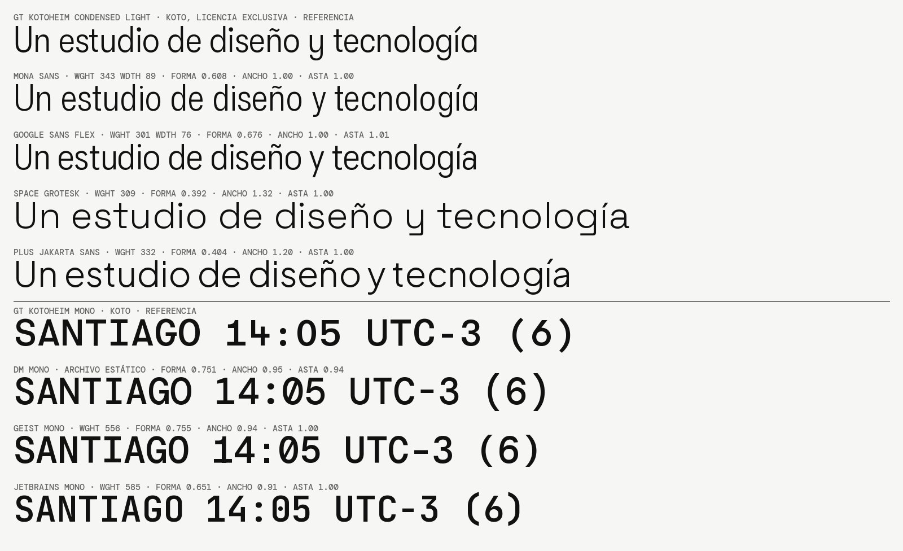
Medidas contra Koto a igual altura de mayúscula, con ancho y peso igualados. Space Grotesk y Plus Jakarta quedan 30.ª y 29.ª de 34: no se pueden condensar y miden 1,32 y 1,20 veces el ancho de Koto. Geist Mono es la mono por defecto de Next.js; JetBrains Mono queda 13.ª de 14. Abrir la lámina a tamaño completo.
Líneas de registro
1234
1 Borde de sección al 18 %, de margen a margen: separa una sección de otra.
2 Línea al 8 % entre filas de una lista.
3 La única marca de registro: una cruz de 9 px donde el borde de la sección cruza el borde de la barra lateral (x = 336). Dos por página como máximo, y ninguna bajo 1194 px.
4 Las 16 columnas solo se ven en el modo esqueleto, leídas del CSS de la página. Dibujadas de adorno serían decoración.
El cursor, sobre trabajo real
Pasa el mouse por la pieza.Con teclado (Tab) el círculo se esconde y el foco se ve; con movimiento reducido o en un teléfono, no hay círculo y el rótulo queda quieto.
El texto del círculo («Ver el caso») es de muestra; el definitivo lo escribe Clara. Resorte del cursor: 2700 · 104 · 1, 90 % del salto en 75 ms.
Ver el caso
El resorte
Tres resortes, ajustados a los tiempos de Koto.Ninguno rebota, porque ninguna curva de Koto ni de A&P pasa de su destino. Elige uno y muévelo; el número en azul lo mide tu navegador.
masa 1
Sin medir todavía.
resorte propuesto lo medido, nombrado bajo cada gráfico
Cursor2700 · 104 · 1 A&P: 90 % a 75 msEstado (hover)800 · 57 · 1 Koto: 167 ms linealEntrada230 · 31 · 1 Koto: 0,5 s (0,0,0,1) A&P: 1,5 s
Calculado con el spring() de Motion 13.5.0 (datos/resortes.json)
Resorte o curva
stiffness · damping · mass
ζ
50 %
90 %
99 %
Sobrepaso
cursor
2700 · 104 · 1
1,001
33 ms
75 ms
128 ms
0 %
estado
800 · 57 · 1
1,008
60 ms
139 ms
239 ms
0 %
entrada
230 · 31 · 1
1,022
113 ms
264 ms
459 ms
0 %
A&P, cursor propio con un salto de 800 px
50 % en 24 ms, 90 % en 75 ms, 99 % en 124 ms (IX2, smoothing 50), sin inercia (medicion.js
Con movimiento reducido no corre ningún resorte: el bloque salta y en el sitio todo está en su lugar desde el principio. Koto y A&P no respetan esa preferencia; aquí sí.
5
Casos y datos reales con que contamos
Seis cosas reales que mostrar, y una sola de cliente.Todo sale del inventario de Diego del 16-oct (e12/inventario-casos.md): lo que se hizo, lo que se usó de verdad, lo que se midió hoy y lo que no se puede decir. Ninguna de estas cifras se publica sin tu decisión.
Verifica y Cumple, plano en su marco: así va el trabajo, sin maqueta de computador.
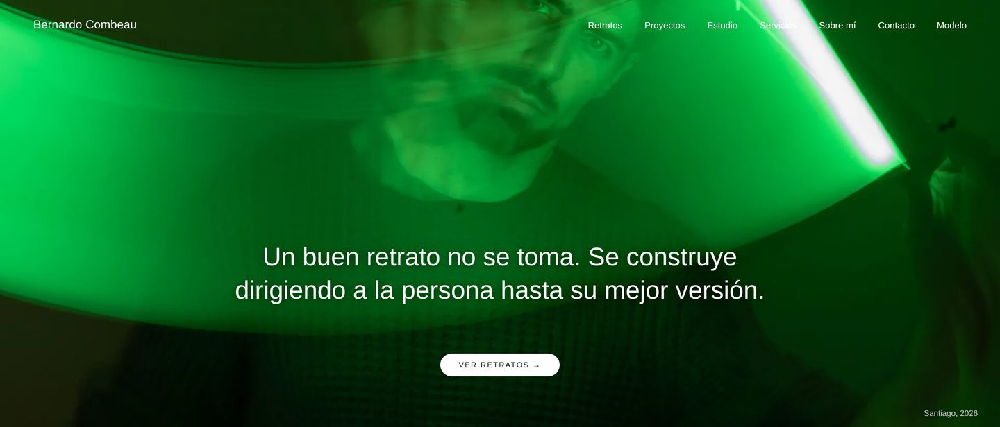
Combeau, fotografía: el caso tiene permiso verbal; medirlo o grabarlo pide su OK escrito.
Cliente · 2026
Bernardo Combeau, fotografía
Sitio de fotografía de retrato con panel de administración: él carga sus series y el sitio se arma solo. Plan Esencial de Desarrollo web, más una ampliación (una sección adicional) cobrada y entregada.
Astro · Decap CMS · Login con GitHub · Netlify · Netlify Image CDN · Datos estructurados (Person y LocalBusiness) · llms.txt
Medido
Chequeo de visibilidad en IA de SpindleLab: 76/100(2026-10-16. Publicable: pide OK escrito de Bernardo)
Carga y peso de la portada (laboratorio): 515 kB a 390 · 408 kB a 1440, transferidos(2026-10-16. Publicable: Los kB, sí, con fecha y método. Los ms, no como «velocidad para tus clientes»: son de laboratorio y desde EE.UU.)
Encabezado principal (h1) por ruta: 7 de 11 rutas sin h1; el de la portada se lee pegado («Se construyedirigiendo»)(2026-10-16. Publicable: no: es un defecto abierto, no un resultado)
Sin métrica
Visitas, consultas o contactos que le trajo el sitio: no hay analítica detectable en lo servido ni dato en el repo.
Lighthouse o PageSpeed: no se corrió.
Datos de campo (CrUX): no se consultaron.
Cliente · 2026
Bernardo Combeau | Model
Book de modelo en inglés dentro del mismo dominio, con su propia marca y navegación; video y reel que cargan solo cuando hacen falta.
Astro · Decap CMS · Netlify Image CDN · Video con carga diferida · Datos estructurados (Person y LocalBusiness)
Medido
Carga y peso de /modelo/ (laboratorio): 558 kB a 390 · 558 kB a 1440, transferidos(2026-10-16. Publicable: Los kB, sí, con fecha y método. Los ms, no como «velocidad para tus clientes»: son de laboratorio y desde EE.UU.)
h1: 0 en /modelo/; 1 en /modelo/work, /modelo/motion y /modelo/commercials(2026-10-16. Publicable: no)
Sin métrica
Contrataciones o castings que haya traído el book.
Chequeo propio: el chequeo lee solo la raíz del dominio, así que /modelo/ comparte el 76 de la portada y no tiene número propio.
Propio · 2026
Verifica y Cumple
Chequeo gratuito de las señales técnicas de la Ley 21.719 que se ven desde afuera en un sitio (política enlazada, HTTPS, permiso antes de rastreadores, casilla de consentimiento), con un chequeo profundo que abre un navegador remoto. Es un servicio de SpindleLab desde el 21-sep.
HTML y CSS escritos a mano · Cloudflare Pages · Cloudflare Pages Functions · Cloudflare Browser Rendering · Cloudflare KV · Cloudflare Web Analytics · Web3Forms · Datos estructurados (WebApplication, WebPage, ProfessionalService, Person, FAQPage) · robots.txt, llms.txt y sitemap.xml
Medido
Chequeo de visibilidad en IA de SpindleLab (el mismo instrumento dos veces): 54/100 el 14-oct → 94/100 el 16-oct(2026-10-14. Publicable: decide Ramón (e11/material.md §6: los puntajes del chequeo propio esperan su OK))
Chequeo de Verifica y Cumple sobre sí mismo: 100(2026-10-16. Publicable: decide Ramón; si sale, con el «18 de 24» al lado)
Carga y peso de la portada (laboratorio): 264 kB a 390 · 264 kB a 1440, transferidos(2026-10-16. Publicable: Los kB, sí, con fecha y método. Los ms, no como «velocidad para tus clientes»: son de laboratorio y desde EE.UU.)
Sin métrica
Cuántos chequeos se han corrido: el chequeo no guarda dominios y no hay contador.
Kits o suscripciones vendidos: el repo no registra ninguno.
Chequeo profundo: no se corrió hoy (cuota).
Herramienta propia · 2026
Chequeo de visibilidad en IA (21 señales)
Lee la portada de cualquier dominio y reporta 21 señales en tres bloques (¿te pueden leer? 30, ¿te entienden? 40, ¿te pueden citar? 30), incluida la prueba de pedir la portada con el nombre de tres robots de IA.
Cloudflare Pages Functions · Prueba con el user-agent de tres robots de IA
Cuántas veces se ha corrido: no guarda dominios; el evento chequeo_completado de GA4 solo cuenta a quien aceptó cookies y no está exportado.
Concepto · 2026
Raigal
Portada de una clínica de implantología que no existe: costo y plazos, etapas, la especialista (ficticia), lo que no se promete y preguntas frecuentes. Ejercicio rotulado.
HTML y CSS a mano, en un archivo · Datos estructurados (Dentist, Person, MedicalProcedure, FAQPage)
Medido
Nada medido hoy.
Sin métrica
Todo: sin URL no hay chequeo, carga ni peso servido. Y por regla de la serie, una pieza de concepto no lleva cifras de resultado (marketing/portafolio/README.md, regla 3).
Propio · 2026
spindlelab.cl (este sitio)
El sitio en producción (v2) y el v3 en construcción, sin publicar, con vista previa noindex.
Astro · Tailwind CSS · Cloudflare Pages + Pages Functions · GA4 y Meta Pixel tras el aviso de cookies · Lenis (solo v3)
Medido
Chequeo de visibilidad en IA sobre spindlelab.cl (producción): 85/100(2026-10-16. Publicable: decide Ramón (e11/material.md §6))
Verifica y Cumple sobre spindlelab.cl: 36 (9-sep) → 73 (21-sep) → 100 (14-oct y 16-oct)(36 y 73: dichos por Ramón (caso de éxito, commit 9ebf384, 21-sep; post publicado el 21-sep), sin respuesta cruda guardada · 100: 2026-10-14T22:29:47Z y 2026-10-16T17:52:42Z con crudo. Publicable: solo en Trabajo (E9), con el cambio de regla y el «14 de 20» dichos)
Carga y peso de la home en producción (v2) (laboratorio): 908 kB a 390 · 908 kB a 1440, transferidos(2026-10-16. Publicable: Los kB, sí, con fecha y método. Los ms, no como «velocidad para tus clientes»: son de laboratorio y desde EE.UU.)
Carga y peso de la home v3 (vista previa) (laboratorio): 391 kB a 390 · 432 kB a 1440, transferidos(2026-10-16. Publicable: Los kB, sí, con fecha y método. Los ms, no como «velocidad para tus clientes»: son de laboratorio y desde EE.UU.)
Carga y peso de /v3/trabajo/ (vista previa) (laboratorio): 490 kB a 390 · 471 kB a 1440, transferidos(2026-10-16. Publicable: Los kB, sí, con fecha y método. Los ms, no como «velocidad para tus clientes»: son de laboratorio y desde EE.UU.)
Video del hero en producción: 5.091.275 bytes (4,9 MB)(2026-10-16. Publicable: sí)
Barrido de cierre del v3 (QA del 6-oct): paradas de foco tapadas: 111 hacia adelante y 14 hacia atrás → 0; UTM que llegan al formulario: se perdían al segundo salto → 8 de 8 recorridos(2026-10-06. Publicable: decide Ramón; es proceso interno, no resultado de negocio)
Sin métrica
Visitas, contactos o conversión del sitio: GA4 existe pero no hay exportación en el repo; el checkpoint del día 77 trae Ads (104 clics, 0 contactos) y eso decide Ramón (e11/material.md §6).
Puntaje del chequeo para la home v3: el chequeo lee la raíz del dominio, no /v3/. La línea base para el criterio 12 se toma en construcción (el 6-oct el acta registró 83 sobre el build de entonces).
Telemetría verdadera
El resultado del chequeo del visitante/api/chequeo: puntaje, 21 ítems, detalle de la prueba por robot, revisadoEn · en vivo, por visitaexiste
El puntaje de spindlelab.cl, con su fechachequear() exportado de chequeo.js, corrido en el build; o /api/chequeo en vivo · en cada build o en vivopor construir
Commit y fecha del buildCF_PAGES_COMMIT_SHA y CF_PAGES_BRANCH (variables del build de Cloudflare Pages) o git log -1 en el build · en cada desplieguepor construir
El peso de la páginaen el build, sumando dist/; o en el navegador del visitante con Resource Timing (transferSize) · por build o por visitapor construir
Lo que tardó esta visitaNavigation Timing y PerformanceObserver (LCP) en el navegador del visitante · por visitapor construir
Desde qué datacenter de Cloudflare le respondimos, con qué protocoloGET /cdn-cgi/trace en el mismo dominio (colo, http, tls) · por visitaexiste
La hora de SantiagoIntl.DateTimeFormat con timeZone America/Santiago · en vivopor construir
Las 21 señales y sus pesosleídos de chequeo.js en el build · en cada buildexiste
Los datos estructurados y los encabezados de la propia páginael DOM: script[type="application/ld+json"], h1 a h3 · en vivoexiste
El robots.txt propiofetch("/robots.txt") · en vivoexiste
Fecha de publicación y de actualización de cada artículodatePublished y dateModified de su JSON-LD · en cada buildexiste
Chequeo de la Ley 21.719 del visitantehttps://verifica.spindlelab.cl/api/chequeo (responde con access-control-allow-origin: *) · en vivoexiste
Sandboxes verdaderos
El chequeo en vivoEl visitante escribe su dominio; el servidor lo lee y le dice qué robot entró y qué falta.existe
Esta página, como la lee un robotMuestra el HTML que llega sin estilos ni scripts, los encabezados, los datos estructurados y lo que respondió el servidor a cada robot.por construir
Modo esqueletoContornea los elementos reales de la página y dibuja las columnas de la retícula leídas de su CSS.por construir
Tu visita, medidaCuánto pesó y cuánto tardó esta página en tu navegador, y qué datacenter respondió.por construir
La foto que sube Bernardo y la que ve su visitanteLa misma foto: 786 KB como la sube, 92 KB como la sirve el sitio.por construir
Lo que no se puede decir
Ningún resultado de negocio de un cliente (+X %, leads, retención, ventas)No existe ninguna medición de resultado de cliente en el repo.
«IA propietaria», «modelos RAG», «despliegue de modelos», «WebGL», «React», «Estrategia C-Level» como ingredientesNinguna pieza los usa. La única con IA programada es Praxi, que está fuera.
El 40 % y el +150 % del segundo texto de RamónSon ejemplos, no datos.
El 76 de bernardocombeau.cl, el peso de sus páginas o su foto en un antes y despuésPide su OK escrito; el permiso verbal es del caso, no de sus mediciones.
El 85 de spindlelab.cl y el 54 → 94 de VerificaLos puntajes del chequeo propio esperan el OK de Ramón.
El 36 → 73 → 100 fuera de Trabajo, o sin decir que cambió la regla y que el 100 es sobre 14 de 20 puntosE9 lo deja solo en Trabajo; el caso de éxito trae el aviso del 16-oct.
Tiempos de carga de este inventario como velocidad para los visitantes o como Core Web VitalsLaboratorio, desde EE.UU., sin limitar la red.
«Bilingüe» para el book de modelolang="es" sobre texto en inglés.
Que el sitio de Combeau es un ejemplo de SEO técnico7 de 11 rutas sin h1; el encargo del 10-oct sigue sin aplicar.
«Clientes» en plural en desarrollo web con nombreHay dos ganados y uno solo con permiso.
Que Verifica y Cumple certifica cumplimientoDescribe señales; no certifica.
Cualquier dato de un prospecto (nombre, dominio, puntaje, el competidor del commit 7696d63)Sin permiso.
Fuera del índice, por permiso o por decisión tuya: un cliente en construcción sin permiso de caso, un cliente de SEO sin permiso, dos piezas de concepto sin revisión y Praxi, que es el único proyecto con IA programada y vive en otro repo (inventario §8).
6
Lo que decides en esta compuerta
Las cinco preguntas del brief de Mauro, con la opción que recomendamos.Basta con responder «de acuerdo» o decir cuál cambias.
¿A quién le vende el giro?
Recomendadoal mismo comprador (dueños, socios y gerentes de pymes B2B y estudios), con la técnica como prueba reenviable. Las empresas con CTO piden otra lista, otra evidencia y un caso que no hay.
¿Qué va en la primera pantalla de la home?
Recomendadotu declaración arriba y el chequeo en la misma pantalla, como su prueba: conserva «el instrumento primero» (2-oct) y suma tu hero; si a 390 no caben, el chequeo va justo debajo y Javiera lo mide. Las otras: solo la declaración, o el chequeo primero como hoy.
¿Cómo se arma el laboratorio?
Recomendado/trabajo/ como índice, una página por caso con material, sin ruta /laboratorio/. Con cinco entradas, dos índices se ven vacíos, y en el repo «laboratorio» ya nombra otra cosa (laboratorio/, ideas fuera de la agencia).
Redes sociales y Paid Media, ¿en la home?
Recomendadosiguen en la oferta y en /servicios/ con sus precios, y en la home bajan a una línea. Un estudio que abre con gestión de redes vuelve a leerse como agencia de marketing, lo que tu segundo texto quiere dejar atrás.
¿Qué activos liberas?
Recomendadopedirle a Bernardo por escrito (un WhatsApp basta) el permiso del caso, de una medición fechada de su sitio y de grabar su sitio y su panel; sin eso, su caso va sin cifra. Praxi queda fuera salvo que digas que entra: sin un proyecto de IA a la vista, el sitio no dice que la programamos.
Supuestos de Mauro, reversibles en una línea: claro, como pide tu brief, aunque Koto es negro en las cuatro pantallas capturadas (el negro, a lo más un momento, si Lucía lo justifica con lo medido) · el logo y el oro siguen abiertos y el tablero usa el wordmark actual · el mini-diagnóstico se sigue ofreciendo (e11/material.md §9.1) · R1 a R9 no frenan el tablero; R5 (tu cargo en el JSON-LD, «Consultor de SEO técnico y visibilidad en IA») queda desalineado con el giro y entra a la construcción.
Y la letra: recomiendo Mona Sans; si prefieres la más cercana a Koto, Google Sans Flex. Se puede decidir aquí o en la compuerta 2.
Lo que viene: dos direcciones, no tres
A · Archivo.El trabajo es lo grande: capturas y grabaciones a sangre, la escala de Koto (48 px de tope) y el muro de dos columnas.
B · Banco.El dato vivo es lo grande: tu declaración a escala monumental en el corte liviano, el chequeo como su prueba y el índice como tabla con filetes.
Las dos comparten colores, letra, cursor y resortes; difieren en lo que carga la pantalla, en la escala del titular y en cómo se arma el índice. Detalle en e12/lock-koto.md §16.